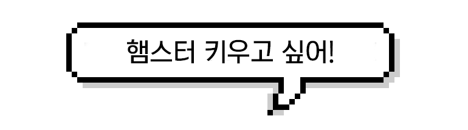

< 햄스터 사육시 필요한 것 >
1. 케이지
케이지의 종류는 크게 '철장형, 수조형, 터널형' 세종류로 나눌 수 있다. 각자 아래와 같은 장단점이 있다.터널형 케이지(하겐 시리즈)
- 햄스터용 터널을 연결해서 만들어준 케이지로 터널와 커넥터를 통해 연결, 확장이 가능하다.
- 가격이 비싸며 환기와 청소가 까다롭다.
- 떨어지는 내구성, 플라스틱 갉는 문제, 공간활용성등의 이유로 이제 사용하는 경우를 거의 찾아볼 수 없다.
철장형 케이지
- 통풍이 잘되어 내부에 습기가 차는 일이 적다.
- 턱없이 작은 사이즈인 경우가 대부분이다. 적정크기의 쳇바퀴도 들어가지 않는다.
- 철장 사이로 베딩이 다 튀어나와서 베딩을 높게 쌓아줄 수가 없다.
- 철장을 갉으면 소음도 발생하고, 햄스터 코에 탈모가 생기거나 치아가 부정교합되는 경우가 있다. 철장에 매달리다가 발이 끼어 다치거나 떨어져서 골절되는 사례가 많다.
수조형 케이지(리빙박스, 유리 수조, 아크릴 케이지 등)
- 크기 선택이 자유롭고, 내부물품 배치도 자유롭다.
- 베딩을 두껍게 쌓아 굴을 파는 햄스터의 본능을 충족 시켜 줄 수 있다.
- 환기가 어렵고, 유리 재질의 경우 달아오르기도 한다. 사방이 투명하게 되어있을 경우 햄스터가 불안감을 느낀다.
2. 쳇바퀴
햄스터의 건강을 위한 필수적인 운동기구다.대부분 인간이 자는 시간대에 쳇바퀴를 돌려 운동량을 채우고 스트레스를 해소한다.
27~33센치 정도가 적당하다.
트릭시(Trixie) 28cm나 워덴트(Wodent) 11인치(28cm)가 가장 추천된다. 국내에서는 바람개비 26cm나 트릭시 28cm를 많이 쓴다. 12인치(30cm)를 쓸 경우 가벼운 제품으로 선택하는 게 좋다. 산코 30cm 쳇바퀴의 경우 유독 무거운 편이다. 국내에서 트릭시 33cm를 직구해서 쓰는 경우도 여럿 있다. 페디그리 햄스터는 반드시 30cm 이상을 사용해야 한다.
19~25센치 정도가 적당하다.
펫존 20cm, 산코 21cm, 바람개비 쳇바퀴 22cm가 많이 쓰이며 바람개비 쳇바퀴의 경우 워낙 가벼워서 26cm를 쓰는 사육자도 있다. 해외에서는 트릭시 20cm나 28cm, 워덴트 27cm, 케이티(Kaytee) 21.6cm를 많이 쓴다. 아크릴의 경우 발털 때문에 적합하지 않아 굳이 쓰지 않는게 좋으며 쓴다면 무겁기 때문에 19~20cm를 쓰는 것이 좋다.
17~22cm가 적당하다.
산코(Sanko) 15cm, 17cm 등이 있으며 바람개비 쳇바퀴의 경우 매우 가벼워서 22cm도 쓸 수 있다. 해외의 경우 대부분 트릭시 20cm나 워덴트 21cm 등을 쓴다. 아크릴의 경우 발털 때문에 부적합하여 쓰지 않는 것이 좋으며 쓴다면 15~17cm를 쓰는 것이 좋다.
3. 베딩
햄스터는 야생에서 굴을 파며 다니기 때문에 기본적인 습성을 만족시켜주고,스트레스 관리를 위해서 케이지 전체 베딩은 필수적이다.
소변 등의 오물을 흡수하는 역할도 담당한다.
높이는 햄스터가 묻혀서 다닐 정도로 깔아주는게 좋다. 최소 10~15cm 이상 깔아야 한다.
독일에선 20cm 넘게 깔라고 하며, 베딩은 높으면 높을수록 좋다.
전체 베딩 교체 주기는 계절과 베딩의 양에 따라 따르다.
겨울보다 여름에 교체주기가 짧아지며,
베딩이 적으면 냄새가 금방 나서 금방 교체해줘야하고, 베딩을 많이 깔아주면 2~3달에 한번 교체해도 된다.
전체교체시 햄스터가 자신의 냄새가 사라져서 불안해 하는 걸 막기 위해 오염이 덜된 베딩을 골라서 섞어준다.
4. 그 외
< 임신과 출산 >
햄스터는 다른 설치류들 처럼 중복자궁(duplex uterus)이며, 한번에 양쪽 자궁에 나누어 새끼를 가진다.
골든 햄스터는 한배에 7~8마리를 낳으며, 드워프 햄스터는 평균 6마리 정도를 낳는다. 로보로브스키는 이보다 더 적다.
새끼는 생후 9~10일 쯤엔 털이 다 올라오며, 13~15일 사이에 눈을 뜨고,
3주가 지나면 젖을 떼고 어미를 따라 사료를 먹기 시작한다.
참고 영상
햄스터의 성장과정